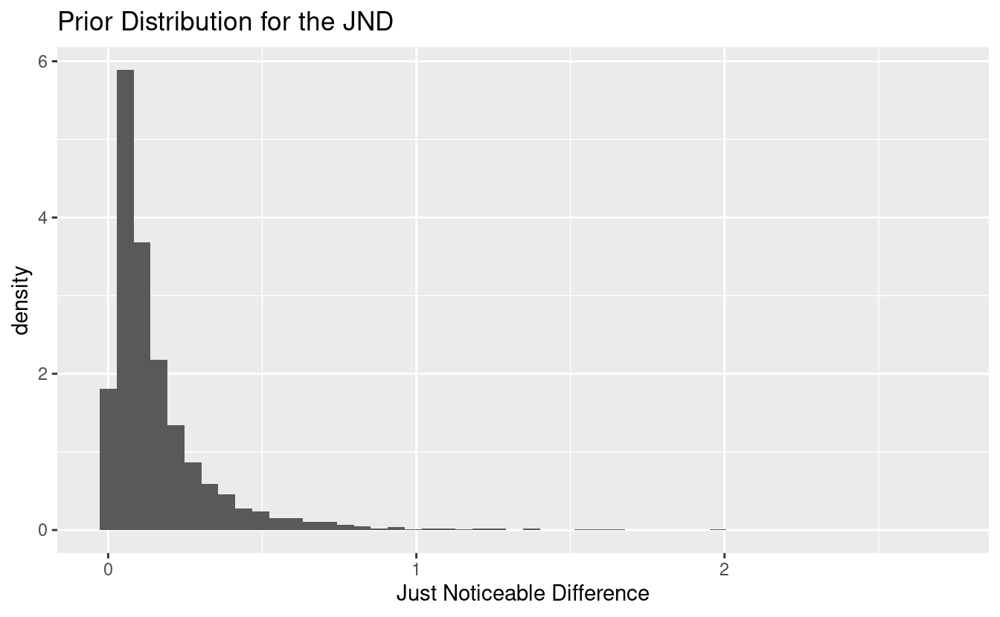

3 Principled Bayesian Workflow
The meat, the cheese, the entire sandwich
Leading up to now, I haven’t discussed what is a principled Bayesian workflow, nor what multilevel modeling is. I was hoping to build up the suspense. Well I hope you’re now ready for the answer. A principled Bayesian workflow is a method of employing domain expertise and statistical knowledge to iteratively build a statistical model that satisfies the constraints and goals set forth by the researcher. Oh, and Bayesian techniques are used in exchange for classical ones. Maybe not worth the suspense, but the simple idea spawns a creative and descriptive way to analyze data.
What about the multilevel aspect? While I get into that more in the following sections, the concept is simple. Multilevel models should be the default. The alternatives are models with complete pooling, or models with no pooling. Pooling vs. no pooling is a fancy way of saying that all the data is modeled as a whole, or the smallest component (group) is modeled individually. The former implies that the variation between groups is zero (all groups are the same), and the latter implies that the variation between groups is infinite (no groups are the same). Multilevel models assume that the truth is somewhere in the middle of zero and infinity. That’s not a difficult thing to posit.
Hierarchical models are a specific kind of multilevel model where one or more groups are nested within a larger one. In the case of the psychometric data, there are three age groups, and within each age group are individual subjects. Multilevel modeling provides a way to quantify and apportion the variation within the data to each level in the model. For an in-depth introduction to multilevel modeling, see Gelman and Hill (2006).
There are many great resources out there for following along with an analysis of some data or problem, and much more is the abundance of tips, tricks, techniques, and testimonies to good modeling practices. The problem is that many of these prescriptions are given without context for when they are appropriate to be taken. According to Betancourt (2020), this leaves “practitioners to piece together their own model building workflows from potentially incomplete or even inconsistent heuristics.” The concept of a principled workflow is that for any given problem, there is not, nor should there be, a default set of steps to take to get from data exploration to predictive inferences. Rather great consideration must be given to domain expertise and the questions that one is trying to answer with the data.
Since everyone asks different questions, the value of a model is not in how well it ticks the boxes of goodness-of-fit checks, but in how consistent it is with domain expertise and its ability to answer the unique set of questions. Betancourt suggests answering four questions to evaluate a model by:
- Domain Expertise Consistency - Is our model consistent with our domain expertise?
- Computational Faithfulness - Will our computational tools be sufficient to accurately fit our posteriors?
- Inferential Adequacy - Will our inferences provide enough information to answer our questions?
- Model Adequacy - Is our model rich enough to capture the relevant structure of the true data generating process?
Like any good Bayesian6, much work is done before seeing the data or building a model. This may include talking with experts to gain domain knowledge or to elicit priors. Experts may know something about a particular measure, perhaps the mean or variability of the data from years of research, and different experts may provide different estimates of a measure. The benefit of modeling in a Bayesian framework is that all prior knowledge may be incorporated into the model to be used to estimate the posterior distribution. The same prior knowledge may also be used to check the posterior to ensure that predictions remain within physical or expert-given constraints. Consistency is key.
The computational tool I will be using to estimate the posterior is a probabilistic programming language (PPL) called Stan (Guo et al. 2020) within the R programming language. Stan uses the No U-Turn Sampler (NUTS) version of Hamiltonian Monte Carlo (HMC) which I will discuss more in chapter 4. For a gentle introduction to Bayesian statistics and sampling methods, see Bolstad and Curran (2016), and for an in-depth review of HMC see Betancourt (2017).
The question of inferential adequacy depends on the set of questions that we are seeking to answer with the data from the psychometric experiment. The broad objective is to determine if there are any significant differences between age groups when it comes to temporal sensitivity, perceptual synchrony, and temporal recalibration, and if the task influences the results as well. The specific goals are to estimate and compare the PSS an JND across all age groups, conditions, and tasks, and determine the affect of recalibration between age groups.
For the last question, model adequacy, I will be following a set of steps proposed in Betancourt (2020). The purpose of laying out these steps is not to again blindly check them off, but to force the analyst to carefully consider each point and make an informed decision whether the step is necessary or to craft the specifics of how the step should be completed. The steps are listed in table 3.1. These steps are also not meant to be followed linearly. If at any point it is discovered that there is an issue in conceptual understanding or model adequacy or something else, then it is encouraged to go back to a previous step and start with a new understanding.
| Part | Step |
|---|---|
| Pre-Model, Pre-Data | conceptual analysis |
| define observational space | |
| construct summary statistics | |
| Post-Model, Pre-Data | develop model |
| construct summary functions | |
| simulate Bayesian ensemble | |
| prior checks | |
| configure algorithm | |
| fit simulated ensemble | |
| algorithmic calibration | |
| inferential calibration | |
| Post-Model, Post-Data | fit observed data |
| diagnose posterior fit | |
| posterior retrodictive checks | |
| celebrate |
I’ll talk about each step in the first iteration, but may choose to omit steps in subsequent iterations if there are no changes. For the purposes of building a model and being concise, I will focus around the audiovisual TOJ task in this chapter, but the final model will apply similarly to the visual and duration tasks. For the sensorimotor task, the model will be modified to accept Bernoulli data as opposed to aggregated Binomial counts (described more in the next section).
3.1 Iteration 1 (journey of a thousand miles)
Pre-Model, Pre-Data
I begin the modeling process by modeling the experiment according to the description of how it occurred and how the data were collected. This first part consists of conceptual analysis, defining the observational space, and constructing summary statistics that can help us to identify issues in the model specification.
Conceptual Analysis
In section 2.2 I discussed the experimental setup and data collection. To reiterate, subjects are presented with two stimuli separated by some temporal delay, and they are asked to respond as to their perception of the temporal order. There are 45 subjects with 15 each in the young, middle, and older age groups. As the SOA becomes larger in the positive direction, subjects are expected to give more “positive” responses, and as the SOA becomes larger in the negative direction, more “negative” responses are expected. By the way the experiment and responses are constructed, there is no expectation to see a reversal of this trend unless there was an issue with the subject’s understanding of the directions given to them or an error in the recording device.
After the first experimental block the subjects go through a recalibration period, and repeat the experiment again. The interest is in seeing if the recalibration has an effect on temporal sensitivity and perceptual synchrony, and if the effect is different for each age group.
Define Observational Space
The response that subjects give during a TOJ task is recorded as a zero or a one (see section 2.2), and their relative performance is determined by the SOA value. Let \(y\) represent the binary outcome of a trial and let \(x\) be the SOA value.
\[\begin{align*} y_i &\in \lbrace 0, 1\rbrace \\ x_i &\in \mathbb{R} \end{align*}\]
If the SOA values are fixed like in the audiovisual task, then the responses can be aggregated into binomial counts, \(k\).
\[ k_i, n_i \in \mathbb{Z}_0^+, k_i \le n_i \]
In the above expression, \(\mathbb{Z}_0^+\) represents the set of non-negative integers. Notice that the number of trials \(n\) has an index variable \(i\). This is because the number of trials per SOA is not fixed between blocks. In the pre-adaptation block, there are five trials per SOA compared to three in the post-adaptation block. So if observation 32 is recorded during a “pre” block, \(n_{32} = 5\), and if observation 1156 is during a “post” block, \(n_{1156} = 3\). Of course this is assuming that each subject completed all trials in the block, but the flexibility of the indexing can manage even if they didn’t.
Then there are also three categorical variables – age group, subject ID, and trial (block). The first two are treated as factor variables7. Rather than using one-hot encoding or dummy variables, the age levels are left as categories and a coefficient is fit for each level. Among the benefits of this approach is the ease of interpretation and ease of working with the data programmatically. This is especially true at the subject level. If a dummy variables was used for all 45 subjects, we would have 44 different dummy variables to work with times the number of coefficients that make estimates at the subject level. The number of parameters in the model grows rapidly as the model complexity grows.
Age groups and individual subjects can be indexed in the same way that number of trials is indexed. \(S_i\) refers to the subject in record \(i\), and similarly \(G_i\) refers to the age group of that subject. Observation 63 is for record ID av-post1-M-f-HG, so then \(S_{63}\) is M-f-HG and \(G_{63}\) is middle_age. Under the hood of R, these factor levels are represented as integers (e.g. middle age group level is stored internally as the number 2).
(x <- factor(c("a", "a", "b", "c")))
#> [1] a a b c
#> Levels: a b c
storage.mode(x)
#> [1] "integer"This data storage representation can later be exploited for the Stan model.
The pre- and post-adaptation categories are treated as a binary indicator referred to as \(trt\) (short for treatment) since there are only two levels in the category. In this setup, a value of 1 indicates a post-adaptation block. I chose this encoding over the reverse because the pre-adaptation block is like the baseline performance, and it seemed more appropriate to interpret the post-adaptation block as turning on some effect. Using a binary indicator in a regression setting may not be the best practice as I discuss in section 3.2.
In the Stan modeling language, data for a binomial model with subject and age group levels and treatment is specified as
data {
int N; // Number of observations
int N_S; // Number of subject levels
int N_G; // Number of age group levels
int N_T; // Number of treatment/control groups
int n[N]; // Trials per SOA
int k[N]; // binomial counts
vector[N] x; // SOA values
int S[N]; // Subject identifier
int G[N]; // Age group identifier
int trt[N]; // Treatment indicator
}In Stan (and unlike in R), data types must be statically declared. While sometimes a nuisance, this requirement aids in something called type inference, and also lets Stan optimize certain parts of the model.
Construct Summary Statistics
In order to effectively challenge the validity of the model, a set of summary statistics are constructed that help answer the questions of domain expertise consistency and model adequacy. We are studying the affects of age and temporal recalibration through the PSS and JND (see section 2.1), so it is natural to define summary statistics around these quantities to verify model consistency. Additionally the PSS and JND can be computed regardless of the model parameterization or chosen psychometric function.
By the experimental setup and recording process, it is impossible that a properly conducted block would result in a JND less than 0 (i.e. the psychometric function is always non-decreasing), so that can be a lower limit for its threshold. On the other end it is unlikely that it will be beyond the limits of the SOA values, but even more concrete, it seems unlikely (though not impossible) that the just noticeable difference would be more than a second.
The lower bound on the JND can be further refined if we draw information from other sources. Some studies show that we cannot perceive time differences below 30 ms, and others show that an input lag as small as 100ms can impair a person’s typing ability. Then according to these studies, a time delay of 100ms is enough to notice, and so a just noticeable difference should be much less than one second – much closer to 100ms. I’ll continue to use one second as an extreme estimate indicator, but will incorporate this knowledge when it comes to selecting priors.
As for the point of subjective simultaneity, it can be either positive or negative, with the belief that larger values are more rare. Some studies suggest that for audio-visual TOJ tasks, the separation between stimuli need to be as little as 20 milliseconds for subjects to be able to determine which modality came first (Vatakis et al. 2007). Other studies suggest that our brains can detect temporal differences as small as 30 milliseconds. If these values are to be believed then we should be skeptical of PSS estimates larger than say 150 milliseconds in absolute value, just to be safe.
A histogram of computed PSS and JND values will suffice for summary statistics. We can estimate the proportion of values that fall outside of our limits defined above, and use them as indications of problems with the model fitting or conceptual understanding.
Post-Model, Pre-Data
It is now time to define priors for the model, while still not having looked at the [distribution of] data. The priors should be motivated by domain expertise and prior knowledge, not the data. There are also many choices when it comes to selecting a psychometric (sigmoid) function. Common ones are logistic, Gaussian, and Weibull.
Figure 3.1: Assortment of psychometric functions.
The Weibull psychometric function is more common when it comes to 2-AFC psychometric experiments where the independent variable is a stimulus intensity (non-negative) and the goal is signal detection. The data in this paper includes both positive and negative SOA values, so the Weibull is not a natural choice. In fact, because this is essentially a model for logistic regression, my first choice is the logistic function as it is the canonical choice for Binomial data. Additionally, the data in this study are reversible. The label of a positive response can be swapped with the label of a negative response and the inferences should remain the same. Since there is no natural ordering, it makes more sense for the psychometric function to be symmetric, e.g. the logistic and Gaussian. I use symmetric loosely to mean that probability density function (PDF) is symmetric about its middle. More specifically, the distribution has zero skewness.
In practice, there is little difference in inference between the logit and probit links, but computationally the logit link is more efficient. I am also more familiar with working on the log-odds scale compared to the probit scale, so I make the decision to go forward with the logistic function. In chapter 4 I will show how even with a mis-specified link function, we can still achieve accurate predictions.
Develop Model
Before moving on to specifying priors, I think it is appropriate to provide a little more background into generalized linear models (GLMs) and their role in working with psychometric functions. A GLM allows the linear model to be related to the outcome variable via a link function. An example of this is the logit link - the inverse of the logistic function. The logistic function, \(F\), takes \(x \in \mathbb{R}\) and constrains the output to be in \((0, 1)\).
\[\begin{equation} F(\theta) = \frac{1}{1 + \exp\left(-\theta\right)} \tag{3.1} \end{equation}\]
Since \(F\) is a strictly increasing and continuous function, it has an inverse, and the link for (3.1) is the log-odds or logit function.
\[\begin{equation} F^{-1}(\pi) = \mathrm{logit}(\pi) = \ln\left(\frac{\pi}{1 - \pi}\right) \tag{3.2} \end{equation}\]
By taking \((F^{-1} \circ F)(\theta)\) we can arrive at a relationship that is linear in \(\theta\).
\[\begin{align*} \pi = F(\theta) \Longleftrightarrow F^{-1}(\pi) &= F^{-1}(F(\theta)) \\ & = \ln\left(\frac{F(\theta)}{1 - F(\theta)}\right) \\ &= \ln(F(\theta)) - \ln(1 - F(\theta)) \\ &= \ln\left(\frac{1}{1 + \exp(-\theta)}\right) - \ln\left(\frac{\exp(-\theta)}{1 + \exp(-\theta)}\right) \\ &= - \ln(1 + \exp(-\theta)) - \ln(\exp(-\theta)) + \ln(1 + \exp(-\theta)) \\ &= - \ln(\exp(-\theta)) \\ &= \theta \end{align*}\]
The purpose of all this setup is to show that a model for the psychometric function can be specified using a linear predictor, \(\theta\). Given a simple slope-intercept model, one would typically write the linear predictor as
\[\begin{equation} \theta = \alpha + \beta x \tag{3.3} \end{equation}\]
This isn’t the only acceptable form; it could be written in the centered parameterization
\[\begin{equation} \theta = \beta(x - a) \tag{3.4} \end{equation}\]
Both parameterizations will describe the same geometry, so why should it matter which form is chosen? Clearly the interpretation of the parameters change between the two models, but the reason becomes clear when you consider how the linear model relates back to the physical properties that the psychometric model describes. Take equation (3.3), substitute it in to (3.1), and then take the logit of both sides
\[\begin{equation} \mathrm{logit}(\pi) = \alpha+\beta x \tag{3.5} \end{equation}\]
Now recall that the PSS is defined as the SOA values such that the response probability, \(\pi\), is \(0.5\). Substituting \(\pi = 0.5\) into (3.5) and solving for \(x\) yields
\[ pss = -\frac{\alpha}{\beta} \]
Similarly, the JND is defined as the difference between the SOA value at the 84% level and the PSS. Substituting \(\pi = 0.84\) into (3.5), solving for \(x\), and subtracting off the pss yields
\[\begin{equation} jnd = \frac{\mathrm{logit}(0.84)}{\beta} \tag{3.6} \end{equation}\]
From the conceptual analysis, it is easy to define priors for the PSS and JND, but then how does one set the priors for \(\alpha\) and \(\beta\)? Let’s say the prior for the just noticeable difference is \(jnd \sim \pi_j\). Then the prior for \(\beta\) would be
\[ \beta \sim \frac{\mathrm{logit}(0.84)}{\pi_j} \]
The log-normal distribution has a nice property where its multiplicative inverse is still a log-normal distribution. We could let \(\pi_j = \mathrm{Lognormal}(\mu, \sigma^2)\) and then \(\beta\) would be distributed as
\[ \beta \sim \mathrm{Lognormal}(-\mu + \ln(\mathrm{logit}(0.84)), \sigma^2) \]
This is acceptable, as it was determined last chapter that the slope must always be positive, and a log-normal distribution constrains the support to postive real numbers. Next suppose that the prior distribution for the PSS is \(pss \sim \pi_p\). Then the prior for \(\alpha\) is
\[ \alpha \sim -\pi_p \cdot \beta \]
If \(\pi_p\) is set to a log-normal distribution as well, then \(\pi_p \cdot \beta\) would also be log-normal, but there is still the problem of the negative sign. If \(\alpha\) is always negative, then the PSS will also always be negative, which is certainly not always true. Furthermore, I don’t want to a priori put more weight on positive PSS values compared to negative ones, for which a lognormal distribution would not do.
Let’s now go back and consider using equation (3.4) and repeat the above process.
\[\begin{equation} \mathrm{logit}(\pi) = \beta(x - a) \tag{3.7} \end{equation}\]
The just noticeable difference is still given by (3.6) and so the same method for choosing a prior can be used, but the PSS is now given by
\[ pss = \alpha \]
This is a fortunate consequence of using (3.4) because now the JND only depends on \(\beta\) and the PSS only depends on \(\alpha\), and now \(\alpha\) can literally be interpreted as the PSS of the estimated psychometric function! Also thrown in is the ability to set a prior for \(\alpha\) that is symmetric around \(0\) like a Gaussian distribution.
This also brings me to point out the first benefit of using a modeling language like Stan over others. For fitting GLMs in R, there are a handful of functions that utilize MLE like stats::glm and others that use Bayesian methods like rstanarm::stan_glm and arm::bayesglm (Gabry and Goodrich 2020; Gelman and Su 2020). Each of these functions requires the linear predictor to be in the form of (3.3). The stan_glm function actually uses Stan in the backend to fit a model, but is limited to priors from the Student t family of distributions. By writing the model directly in Stan, the linear model can be parameterized in any way and with any prior distribution, and so allows for much more expressive modeling - a key aspect of this principled workflow.
For the first iteration of this model, I am going to start with the simplest model that captures the structure of the data without including information about age group, treatment, or subject. Here is a simple model that draws information from the conceptual analysis.
\[\begin{align*} k_i &\sim \mathrm{Binomial}(n_i, p_i) \\ \mathrm{logit}(p_i) &= \beta ( x_i - \alpha ) \end{align*}\]
Since I am using the linear model from (3.4), setting the priors for \(\alpha\) and \(\beta\) is relatively straightforward. The PSS can be positive or negative without any expected bias towards either, so a symmetric distribution like the Gaussian is a fine choice for \(\alpha\) without having any other knowledge about the distribution of PSS values. Since I said earlier that a PSS value more than 150ms in absolute value is unlikely, I can define a Gaussian prior such that \(P(|pss| > 0.150) \approx 0.01\). Since the prior does not need to be exact, the following mean and variance suffice
\[ pss \sim \mathcal{N}(0, 0.06^2) \Longleftrightarrow \alpha \sim \mathcal{N}(0, 0.06^2) \]
For the just noticeable difference, I will continue to use the log-normal distribution because it is constrained to positive values and has the nice reciprocal property. The JND is expected to be close to 100ms and extremely unlikely to exceed 1 second. This implies a prior such that the mean is around 100ms and the bulk of the distribution is below 1 second - i.e. \(E[X] \approx 0.100\) and \(P(X < 1) \approx 0.99\). This requires solving a system of nonlinear equations in two variables
\[ \begin{cases} E[X] = 0.100 = \exp\left(\mu + \sigma^2 / 2\right) \\ P(X < 1) = 0.99 = 0.5 + 0.5 \cdot \mathrm{erf}\left[\frac{\ln (1) - \mu}{\sqrt{2} \cdot \sigma}\right] \end{cases} \]
This nonlinear system can be solved using Stan’s algebraic solver.
functions {
vector system(vector y, vector theta, real[] x_r, int[] x_i) {
vector[2] z;
z[1] = exp(y[1] + y[2]^2 / 2) - theta[1];
z[2] = 0.5 + 0.5 * erf(-y[1] / (sqrt(2) * y[2])) - theta[2];
return z;
}
}
transformed data {
vector[2] y_guess = [1, 1]';
real x_r[0];
int x_i[0];
}
transformed parameters {
vector[2] theta = [0.100, 0.99]';
vector[2] y;
y = algebra_solver(system, y_guess, theta, x_r, x_i);
}fit <- sampling(prior_jnd, iter=1, warmup=0, chains=1, refresh=0,
seed=31, algorithm="Fixed_param")
sol <- extract(fit)
sol$y
#>
#> iterations [,1] [,2]
#> [1,] -7.501 3.225The solver has determined that \(\mathrm{Lognormal}(-7.5, 3.2^2)\) is the appropriate prior. However, simulating some values from this distribution produces a lot of extremely small values (\(<10^{-5}\)) and a few extremely large values (\(\approx 10^2\)). This is because the expected value of a log-normal random variable depends on both the mean and standard deviation. If the median is used in place for the mean, then a more acceptable prior may be determined.
fit <- sampling(prior_jnd_using_median, iter=1, warmup=0, chains=1, refresh=0,
seed=31, algorithm="Fixed_param")
sol <- extract(fit)
sol$y
#>
#> iterations [,1] [,2]
#> [1,] -2.303 0.9898Sampling from a log-normal distribution with these parameters and plotting the histogram shows no inconsistency with the domain expertise.

So now with a prior for the JND, the prior for \(\beta\) can be determined.
\[ jnd \sim \mathrm{Lognormal}(-2.3, 0.99^2) \Longleftrightarrow \frac{1}{jnd} \sim \mathrm{Lognormal}(2.3, 0.99^2) \]
and
\[ \beta = \frac{\mathrm{logit}(0.84)}{jnd} \sim \mathrm{Lognormal}(2.8, 0.99^2) \]
The priors do not need to be too exact. Rounding the parameters for \(\beta\), the simple model is
\[\begin{align*} k_i &\sim \mathrm{Binomial}(n_i, p_i) \\ \mathrm{logit}(p_i) &= \beta ( x_i - \alpha ) \\ \alpha &\sim \mathcal{N}(0, 0.06^2) \\ \beta &\sim \mathrm{Lognormal}(3, 1^2) \end{align*}\]
and in Stan, the model code is
data {
int N;
int n[N];
int k[N];
vector[N] x;
}
parameters {
real alpha;
real<lower=0> beta;
}
model {
vector[N] p = beta * (x - alpha);
alpha ~ normal(0, 0.06);
beta ~ lognormal(3.0, 1.0);
k ~ binomial_logit(n, p);
}
generated quantities {
vector[N] log_lik;
vector[N] k_pred;
vector[N] theta = beta * (x - alpha);
vector[N] p = inv_logit(theta);
for (i in 1:N) {
log_lik[i] = binomial_logit_lpmf(k[i] | n[i], theta[i]);
k_pred[i] = binomial_rng(n[i], p[i]);
}
}Notice that the model block is nearly identical to the mathematical model!
Construct Summary Functions
Whew! that was a lot of work to define the priors for just two parameters. Thankfully going forward not as much work will need to be done to expand the model. The next step is to construct any relevant summary functions. Since the distribution of posterior PSS and JND values are needed for the summary statistics, it will be nice to have a function that can take in the posterior samples for \(\alpha\) and \(\beta\) and return the PSS and JND values. I’ll define \(Q\) as a more general function that takes in the two parameters and a probability, \(\pi\), and returns the distribution of SOA values at \(\pi\).
\[\begin{equation} Q(\pi; \alpha, \beta) = \frac{\mathrm{logit(\pi)}}{\beta} + \alpha \tag{3.8} \end{equation}\]
The function can be defined in R as
With \(Q\), the PSS and JND can be calculated as
\[\begin{align} pss &= Q(0.5) \\ jnd &= Q(0.84) - Q(0.5) \end{align}\]
Simulate Bayesian Ensemble
During this step, I simulate the Bayesian ensemble and later feed the prior values into the summary functions in order to verify that there are no other inconsistencies with domain knowledge. Since the model is fairly simple, I will simulate directly in R.
set.seed(124)
n <- 10000
a <- rnorm(n, 0, 0.06)
b <- rlnorm(n, 3.0, 1)
dat <- with(av_dat, list(N = N, x = x, n = n))
n_obs <- length(dat$x)
idx <- sample(1:n, n_obs, replace = TRUE)
probs <- logistic(b[idx] * (dat$x - a[idx]))
sim_k <- rbinom(n_obs, dat$n, probs)Prior Checks
This step pertains to ensuring that prior estimates are consistent with domain expertise. I already did that in the model construction step by sampling values for the just noticeable difference. The first prior chosen was not producing JND estimates that were consistent with domain knowledge, so I adjusted accordingly. That check would normally be done during this step, and I would have had to return to the model development step.
Figure 3.2 shows the distribution of prior psychometric functions derived from the simulated ensemble. There are a few very steep and very shallow curves, but the majority fall within a range that appears likely.
Figure 3.2: Prior distribution of psychometric functions using the priors for alpha and beta.
Additionally most of the PSS values are within \(\pm 0.1\) with room to allow for some larger values. Let’s check the prior distribution of PSS and JND values.
Figure 3.3: PSS prior distribution.
Figure 3.4: JND prior distribution.
I am satisfied with the prior coverage of the PSS and JND values, and there are only a few samples that go beyond the extremes that were specified in the summary statistics step.
Configure Algorithm
There are a few parameters that can be set for Stan. On the user side, the main parameters are the number of iterations, the number of warm-up iterations, the target acceptance rate, and the number of chains to run. The NUTS algorithm samples in two phases: a warm-up phase and a sampling phase. During the warm-up phase, the sampler is automatically tuning three internal parameters that can significantly affect the sampling efficiency. By default, the Stan function will use half the number of iterations for warm-up and the other half for actual sampling. The full details of Stan’s HMC algorithm is described in the Stan reference manual. For now I am going to use the default algorithm parameters in Stan, and will tweak them later if and when issues arise.
Fit Simulated Ensemble
Nothing to say here. Only code.
sim_dat <- with(av_dat, list(N = N, x = x, n = n, k = sim_k))
m031 <- sampling(m031_stan, data = sim_dat,
chains = 4, cores = 4, refresh = 0)Algorithmic Calibration
One benefit of using HMC over other samplers like Gibbs sampling is that HMC offers diagnostic tools for the health of chains and the ability to check for divergent transitions (discussed in 4.1.1.4). To check the basic diagnostics of the model, I run the following code.
check_hmc_diagnostics(m031)
#>
#> Divergences:
#> 0 of 4000 iterations ended with a divergence.
#>
#> Tree depth:
#> 0 of 4000 iterations saturated the maximum tree depth of 10.
#>
#> Energy:
#> E-BFMI indicated no pathological behavior.There is no undesirable behavior from this model, so next I check the summary statistics of the estimated parameters. The \(\hat{R}\) statistic is a comparison of the measure of variance within chains and between chains. When chains have converged to a stationary distribution, the variance within and between chains is the same, and the ratio is one. Values of \(\hat{R} > 1.1\) are usually indicative of chains that have not converged to a common distribution. Lastly there is the effective sample size (\(N_{\mathrm{eff}}\)) which is a loose measure for the autocorrelation within the parameter samples. As autocorrelation generally decreases as the lag increases, one can achieve a higher \(N_{\mathrm{eff}}\) by running a chain with more samples and then thinning the samples, i.e. saving only every \(n^{th}\) sample.
| parameter | mean | se_mean | sd | 2.5% | 97.5% | n_eff | Rhat |
|---|---|---|---|---|---|---|---|
| alpha | 0.0061 | 0.0001 | 0.0038 | -0.0012 | 0.0136 | 4039 | 0.9995 |
| beta | 10.7681 | 0.0051 | 0.2404 | 10.3043 | 11.2313 | 2202 | 1.0003 |
Both the \(\hat{R}\) and \(N_{\mathrm{eff}}\) look fine for both \(\alpha\) and \(\beta\), thought it is slightly concerning that \(\alpha\) is centered relatively far from zero. This could just be due to sampling variance, so I will continue on to the next step.
Post-Model, Post-Data
Fit Observed Data
All of the work up until now has been done without peaking at the observed data. Satisfied with the model so far, I can now go ahead and run the data through.
Diagnose Posterior Fit
Here I repeat the diagnostic checks that I used after fitting the simulated Bayesian ensemble.
check_hmc_diagnostics(m031)
#>
#> Divergences:
#> 0 of 4000 iterations ended with a divergence.
#>
#> Tree depth:
#> 0 of 4000 iterations saturated the maximum tree depth of 10.
#>
#> Energy:
#> E-BFMI indicated no pathological behavior.| parameter | mean | se_mean | sd | 2.5% | 97.5% | n_eff | Rhat |
|---|---|---|---|---|---|---|---|
| alpha | 0.0373 | 0.0001 | 0.0043 | 0.029 | 0.0458 | 3765 | 1.000 |
| beta | 8.4259 | 0.0039 | 0.1839 | 8.070 | 8.7897 | 2249 | 1.001 |
No indications of an ill-behaved posterior fit! Let’s also check the posterior distribution of \(\alpha\) and \(\beta\) against the prior density (3.5).
Figure 3.5: Comparison of posterior distributions for alpha and beta to their respective prior distributions.
The posterior distributions for \(\alpha\) and \(\beta\) are well within the range determined by domain knowledge, and highly concentrated due to both the large amount of data and the fact that this is a completely pooled model - no stratification. As expected, the prior for the JND could have been tighter with more weight below half a second compared to the one second limit used, but this is not prior information, so it is not prudent to change the prior in this manner after having seen the posterior. As a rule of thumb, priors should only be updated as motivated by domain expertise and not by posterior distributions.
Posterior Retrodictive Checks
Finally it is time to run the posterior samples through the summary functions and then perform retrodictive checks. A retrodiction is using the posterior model to predict and compare to the observed data. This is simply done by drawing samples from the posterior and feeding in the observational data. This may be repeated to gain a retrodictive distribution.
posterior_pss <- Q(0.5, p031$alpha, p031$beta)
posterior_jnd <- Q(0.84, p031$alpha, p031$beta) - posterior_pssFigure 3.6: Posterior distribution of the PSS and JND.
Neither of the posterior estimates for the PSS or JND exceed the extreme cutoffs set in the earlier steps, so I can be confident that the model is consistent with domain expertise. Let’s also take a second to appreciate how simple it is to visualize and summarize the distribution of values for these measures. Using classical techniques like MLE might require using bootstrap methods to estimate the distribution of parameter values, or one might approximate the parameter distributions using the mean and standard error of the mean to simulate new values. Since we have the entire posterior distribution we can calculate the distribution of transformed parameters by working directly with the posterior samples and be sure that the intervals are credible.
Next is to actually do the posterior retrodictions. I will do this in two steps to better show how the distribution of posterior psychometric functions relates to the observed data, and then compare the observed data to the retrodictions. Figure 3.7 shows the result of the first step.
Figure 3.7: Posterior distribution of psychometric functions using pooled observations.
Next I sample parameter values from the posterior distribution and use them to simulate a new data set. In the next iteration I will show how I can get Stan to automatically produce retrodictions for me in the model fitting step. The results of the posterior retrodictions are shown in figure 3.8.
alpha <- sample(p031$alpha, n_obs, replace = TRUE)
beta <- sample(p031$beta, n_obs, replace = TRUE)
logodds <- beta * (av_dat$x - alpha)
probs <- logistic(logodds)
sim_k <- rbinom(n_obs, av_dat$n, probs)Figure 3.8: Observed data compared to the posterior retrodictions. The data is post-stratified by block for easier visualization.
I want to make it clear exactly what the first iteration of this model tells us. It is the average distribution of underlying psychometric functions across all subjects and blocks. It cannot tell us what the differences are between pre- and post-adaptation blocks are, or even what the variation between subjects is. As such, it is only useful in determining if the average value for the PSS is different from 0 or if the average JND is different from some other predetermined level. This model is still useful given the right question, but this model cannot answer questions about group-level effects.
Figure 3.8 shows that the model captures the broad structure of the observed data, but is perhaps a bit under-dispersed in the tail ends of the SOA values. Besides this one issue, I am satisfied with the first iteration of this model and am ready to proceed to the next iteration.
3.2 Iteration 2 (electric boogaloo)
In this iteration I will be adding in the treatment and age groups into the model. There are no changes with the conceptual understanding of the experiment, and nothing to change with the observational space. As such I will be skipping the first three steps and go straight to the model development step. As I build the model, the number of changes from one iteration to the next should go to zero as the model expands to become only as complex as necessary to answer the research questions.
Post-Model, Pre-Data
Develop Model
To start, let’s add in the treatment indicator and put off consideration of adding in the age group levels. In classical statistics, it is added as an indicator variable (zero or one) for both the slope and intercept (varying slopes, varying intercepts model). Let \(trt\) be \(0\) if it is the pre-adaptation block and \(1\) if the observation comes from the post-adaptation block.
\[ \theta = \alpha + \alpha_{trt} \times trt + \beta \times x + \beta_{trt}\times trt \times x \]
Now when an observation comes from the pre-adaptation block (\(trt=0\)) the linear predictor is given by
\[ \theta_{pre} = \alpha + \beta \times x \]
and when an observation comes from the post-adaptation block (\(trt=1\)) the linear predictor is
\[ \theta_{post} = (\alpha + \alpha_{trt}) + (\beta + \beta_{trt}) \times x \]
This might seem like a natural way to introduce an indicator variable, but it comes with serious implications. This model implies that there is more uncertainty about the post-adaptation block compared to the baseline block, and this is not necessarily true.
\[\begin{align*} \mathrm{Var}(\theta_{post}) &= \mathrm{Var}((\alpha + \alpha_{trt}) + (\beta + \beta_{trt}) \times x) \\ &= \mathrm{Var}(\alpha) + \mathrm{Var}(\alpha_{trt}) + x^2 \mathrm{Var}(\beta) + x^2\mathrm{Var}(\beta_{trt}) \end{align*}\]
On the other hand, the variance of \(\theta_{pre}\) is
\[ \mathrm{Var}(\theta_{pre}) = \mathrm{Var}(\alpha) + x^2 \mathrm{Var}(\beta) \le \mathrm{Var}(\theta_{post}) \]
Furthermore, the intercept, \(\alpha\), is no longer the average response probability at \(x=0\) for the entire data set, but is instead exclusively the average for the pre-adaptation block. This may not matter in certain analyses, but one nice property of multilevel models is the separation of population level estimates and group level estimates (fixed vs. mixed effects).
So instead the treatment variable is introduced into the linear model as a factor variable. This essentially means that each level in the treatment gets its own parameter estimate, and this also makes it easier to set priors when there are many levels in a group (such as for the subject level). The linear model, using equation (3.4), with the treatment is written as
\[\begin{equation} \theta = (\beta + \beta_{trt[i]}) \left[x_i - (\alpha + \alpha_{trt[i]})\right] \tag{3.9} \end{equation}\]
As I add in more predictors and groups, equation (3.9) will start to be more difficult to read. What I can do is break up the slope and intercept parameters and write the linear model as
\[\begin{align*} \mu_\alpha &= \alpha + \alpha_{trt[i]} \\ \mu_\beta &= \beta + \beta_{trt[i]} \\ \theta &= \mu_\beta (x - \mu_\alpha) \end{align*}\]
In this way the combined parameters can be considered separately from the linear parameterization. Which leads me to consider the priors for \(\alpha_{trt}\) and \(\beta_{trt}\). The way that we can turn an normal model with categorical predictors into a multilevel model is by allowing the priors to borrow information from other groups. This is accomplished by putting priors on priors. It is easier to write down the model first before explaining how it works.
\[\begin{align*} k_i &\sim \mathrm{Binomial}(n_i, p_i) \\ \mu_\alpha &= \alpha + \alpha_{trt[i]} \\ \mu_\beta &= \beta + \beta_{trt[i]} \\ \mathrm{logit}(p_i) &= \mu_\beta (x_i - \mu_\alpha) \\ \alpha &\sim \mathcal{N}(0, 0.06^2) \\ \alpha_{trt} &\sim \mathcal{N}(0, \sigma_{trt}^2) \\ \sigma_{trt} &\sim \textrm{to be defined} \end{align*}\]
In the above model, \(\alpha\) gets a fixed prior (the same as in the first iteration), and \(\alpha_{trt}\) gets a Gaussian prior with an adaptive variance term that is allowed to be learned from the data. This notation is compact, but \(\alpha_{trt}\) is actually two parameters - one each for the pre- and post-adaptation blocks - but they both share the same variance term \(\sigma_{trt}\). This produces a regularizing effect where both treatment estimates are shrunk towards the mean, \(\alpha\).
I’ll discuss selecting a prior for the variance term shortly, but now I want to discuss setting the prior for the slope terms. Instead of modeling \(\beta\) with a log-normal prior, I can sample from a normal distribution and take the exponential of it to produce a log-normal distribution. I.e.
\[ X \sim \mathcal{N}(3, 1^2) \\ Y = \exp\left\lbrace X \right\rbrace \Longleftrightarrow Y \sim \mathrm{Lognormal(3, 1^2)} \]
The motivation behind this transformation is that it is now easier to include new slope variables as an additive affect. If both \(\beta\) and \(\beta_{trt}\) are specified with Gaussian priors, then the exponential of the sum will be a log-normal distribution! So the model now gains
\[\begin{align*} \mathrm{logit}(p_i) &= \exp(\mu_\beta) (x_i - \mu_\alpha) \\ \beta &\sim \mathcal{N}(3, 1^2) \\ \beta_{trt} &\sim \mathcal{N}(0, \gamma_{trt}^2) \\ \gamma_{trt} &\sim \textrm{to be defined} \end{align*}\]
Deciding on priors for the variance term requires some careful consideration. In one sense, the variance term is the within group variance. Gelman and others (2006) recommends that for multilevel models with groups with less than say 5 levels to use a half Cauchy prior. This weakly informative prior still has a regularizing affect and dissuades larger variance estimates. Even though the treatment group only has two levels, there is still value in specifying an adaptive prior for them, and there is also a lot of data for each treatment so partial pooling won’t make a difference anyway.
\[\begin{align*} \sigma_{trt} &\sim \mathrm{HalfCauchy}(0, 1) \\ \gamma_{trt} &\sim \mathrm{HalfCauchy}(0, 1) \end{align*}\]
Finally I can add in the age group level effects and specify the variance terms.
\[\begin{align*} \alpha_{G} &\sim \mathcal{N}(0, \tau_{G}^2)\\ \beta_{G} &\sim \mathcal{N}(0, \nu_{G}^2) \\ \tau_{G} &\sim \mathrm{HalfCauchy}(0, 2) \\ \nu_{G} &\sim \mathrm{HalfCauchy}(0, 2) \end{align*}\]
The corresponding Stan model is becoming quite long, so I omit it from here on out. The final Stan model code may be found in the supplementary code of the appendix.
Post-Model, Post-Data
Fit Observed Data
I’m choosing to skip the prior checks this time around and use the observed data to configure the algorithm and diagnose the posterior fit.
Diagnose Posterior Fit
check_hmc_diagnostics(m032)
#>
#> Divergences:
#> 4 of 4000 iterations ended with a divergence (0.1%).
#> Try increasing 'adapt_delta' to remove the divergences.
#>
#> Tree depth:
#> 0 of 4000 iterations saturated the maximum tree depth of 10.
#>
#> Energy:
#> E-BFMI indicated no pathological behavior.As well as the 4 divergent transitions, there was also a message about the effective sample size (ESS) being too low. The recommended prescription for low ESS is to run the chains for more iterations. The posterior summary shows that \(N_{\mathrm{eff}}\) is low for the age group level parameters (table 3.4).
| parameter | mean | se_mean | sd | 2.5% | 97.5% | n_eff | Rhat |
|---|---|---|---|---|---|---|---|
| a | 0.0222 | 0.0014 | 0.0412 | -0.0683 | 0.1024 | 824.6 | 1.002 |
| aG[1] | -0.0009 | 0.0012 | 0.0313 | -0.0531 | 0.0714 | 703.5 | 1.003 |
| aG[2] | 0.0274 | 0.0012 | 0.0316 | -0.0218 | 0.0990 | 698.3 | 1.003 |
| aG[3] | -0.0078 | 0.0012 | 0.0311 | -0.0609 | 0.0609 | 714.3 | 1.004 |
| b | 2.4114 | 0.0216 | 0.5665 | 1.4902 | 3.8499 | 688.2 | 1.003 |
| bG[1] | 0.0030 | 0.0170 | 0.2942 | -0.7681 | 0.5013 | 301.3 | 1.004 |
| bG[2] | 0.0538 | 0.0170 | 0.2940 | -0.7101 | 0.5499 | 299.9 | 1.004 |
| bG[3] | -0.2223 | 0.0172 | 0.2955 | -1.0150 | 0.2597 | 296.9 | 1.004 |
So I can go back to the algorithm configuration step and increase the number of iterations and warm-up iterations, as well as increase the adapt delta parameter to reduce the number of divergent transitions (which really isn’t a problem right now).
Another technique I can employ is non-centered parameterization, and now is as good a time as any to introduce it. I have actually already used non-centered parameterization in this iteration of the model without addressing it - the transformation of \(\beta\) from a Gaussian to a log-normal distribution.
Because HMC is a physics simulation, complicated geometry or posteriors with steep slopes can be difficult to traverse if the step size is too course. The solution is to explore a simpler geometry, and then transform the sample into the target distribution. Reparameterization is especially important for hierarchical models. The Cauchy distribution used for the variance term can be reparameterized by first drawing from a uniform distribution on \((-\pi/2, \pi/2)\). For a half Cauchy distribution, just sample from \(\mathcal{U}(0, \pi/2)\).
\[\begin{align*} X &\sim \mathcal{U}(-\pi/2, \pi/2) \\ Y &= \mu + \tau \cdot \tan(X) \Longrightarrow Y \sim \mathrm{Cauchy(\mu, \tau)} \end{align*}\]
The Gaussian distributions can be reparameterized in a similar way. If \(Z\) is a standard normal random variable, then \(\mu + \sigma Z \sim \mathcal{N}(\mu, \sigma^2)\). For Stan, sampling from a standard normal or uniform distribution is very easy, and so the non-centered parameterization can alleviate divergent transitions. I now return to the model development step and incorporate the new methods.
Develop Model
The model changes consist of using the non-centered parameterizations discussed in the previous step. An example is in the parameterization of \(\tau_{G}\). The other variance terms are parameterized in the same fashion.
\[\begin{align*} U_\tau &\sim \mathcal{U}(0, \pi/2) \\ \tau_{G} &= 2 \cdot \tan(U_1) \Longrightarrow \tau_G \sim \mathrm{HalfCauchy}(0, 2) \end{align*}\]
As an aside, a multilevel model can be fit in R using lme4::glmer, brms::brm, or rstanarm::stan_glmer, and they all use the same notation to specify the model. The notation is very compact, but easy to unpack. Values not in a grouping term are fixed effects and values in a grouping term (e.g. (1 + x | G)) are mixed or random effects depending on which textbook you read.
f <- formula(k|n ~ 1 + x + (1 + x | G) + (1 + x | trt))
lme4::glmer(f, data = data, family = binomial("logit"))
rstanarm::stan_glmer(f, data = data, family = binomial("logit"))
brms::brm(f, data = data, family = binomial("logit"))The simpler notation and compactness of these methods are very attractive, and for certain analyses they may be more than sufficient. The goal here is to decide early on if these methods satisfy the model adequacy, and to use more flexible modeling tools like Stan if necessary.
Fit Observed Data
Moving on to refitting the data, this time with more iterations and with the non-centered parameterization. Since this model is sampling from intermediate parameters, I can choose to keep only the transformed parameters.
m032nc <- sampling(m032nc_stan, data = obs_dat, seed = 143, thin = 2,
iter = 4000, warmup = 2000, pars = keep_pars,
control = list(adapt_delta = 0.95),
chains = 4, cores = 4, refresh = 100)Diagnose Posterior Fit
check_hmc_diagnostics(m032nc)
#>
#> Divergences:
#> 32 of 4000 iterations ended with a divergence (0.8%).
#> Try increasing 'adapt_delta' to remove the divergences.
#>
#> Tree depth:
#> 0 of 4000 iterations saturated the maximum tree depth of 10.
#>
#> Energy:
#> E-BFMI indicated no pathological behavior.There are still a few divergent transitions (\(<1\%\)), but the effective sample size increased significantly (table 3.5).
| parameter | mean | se_mean | sd | 2.5% | 97.5% | n_eff | Rhat |
|---|---|---|---|---|---|---|---|
| a | 0.0192 | 0.0008 | 0.0419 | -0.0744 | 0.0956 | 2509 | 1.0005 |
| aG[1] | -0.0025 | 0.0006 | 0.0326 | -0.0636 | 0.0739 | 2737 | 1.0014 |
| aG[2] | 0.0262 | 0.0006 | 0.0328 | -0.0342 | 0.1044 | 2644 | 1.0014 |
| aG[3] | -0.0093 | 0.0006 | 0.0326 | -0.0713 | 0.0652 | 2752 | 1.0011 |
| aT[1] | 0.0185 | 0.0009 | 0.0425 | -0.0546 | 0.1242 | 2338 | 1.0005 |
| aT[2] | 0.0039 | 0.0009 | 0.0419 | -0.0679 | 0.1089 | 2404 | 1.0005 |
| b | 2.3841 | 0.0115 | 0.5284 | 1.4762 | 3.6952 | 2109 | 1.0010 |
| bG[1] | 0.0170 | 0.0049 | 0.2730 | -0.6323 | 0.4979 | 3106 | 1.0004 |
| bG[2] | 0.0678 | 0.0049 | 0.2728 | -0.5773 | 0.5671 | 3113 | 1.0005 |
| bG[3] | -0.2075 | 0.0050 | 0.2741 | -0.8506 | 0.2767 | 3026 | 1.0004 |
| bT[1] | -0.2764 | 0.0106 | 0.4914 | -1.6338 | 0.5427 | 2141 | 0.9999 |
| bT[2] | -0.0501 | 0.0106 | 0.4909 | -1.4120 | 0.7778 | 2125 | 1.0000 |
Now is also a good time to introduce a diagnostic tool called the trace plot. The trace plot is a way to visualize the sampling path of different parameters across all the chains. A healthy set of chains will look like a fuzzy caterpillar, bouncing around the posterior without any visual patterns or long sequences of being in the same place. Figure 3.9 shows the trace plot for the slope and intercept parameters. Each chain looks like it is sampling around the same average value as the others with identical spreads (stationary and homoscedastic). This also helps to solidify the idea that the \(\hat{R}\) statistic is the measure of between chain variance compared to cross chain variance.
Figure 3.9: Traceplot for the slope and intercept parameters.
The chains in figure 3.9 look healthy as well as for the other parameters not shown. Since there are no algorithm issues, I can proceed to the posterior retrodictive checks.
Posterior Retrodictive Checks
In this iteration of the model, I now have estimates for the age groups and the treatment. The posterior estimates for the PSS and JND are shown in figure 3.10. There are many ways to visualize and compare the distributions across age groups and conditions, and it really depends on what question is being asked. If for example the question is “what is the qualitative difference between pre- and post-adaptation across age groups?”, then figure 3.10 could answer that because it juxtaposes the two blocks in the same panel. I will consider alternative ways of arranging the plots in chapter 5.
Figure 3.10: Posterior distribution of the PSS and JND.
As for the posterior retrodictions, I can do something similar to last time. First I’d like to point out that I had Stan perform posterior retrodictions during the fitting step. This was achieved by adding a generated quantities block to the Stan program that takes the posterior samples for the parameters, and then randomly generates a value from a binomial distribution for each observation in the data. In effect, I now have \(10,000\) simulated data sets!
str(p032$k_pred)
#> num [1:4000, 1:1827] 0 0 0 0 0 0 0 0 0 0 ...
#> - attr(*, "dimnames")=List of 2
#> ..$ iterations: NULL
#> ..$ : NULLI only need one to compare to the observed data, so I will select it randomly from the posterior.
Figure 3.11: Observed data compared to the posterior retrodictions.
The posterior retrodictions show no disagreement between the model and the observed data. I almost would say that this model is complete, but this model has one more problem - it measures the average difference in blocks, and the average difference in age groups, but does not consider any interaction between the two! Implicitly it assumes that temporal recalibration affects all age groups the same which may not be true, so in the next iteration I will need to address that.
3.3 Iteration 3 (the one for me)
Since there is no change in the pre-model analysis, I’ll again jump straight to the model development step, after which I will jump right to the posterior retrodictive checks. The changes to the model going forward are minor, and subsequent steps are mostly repetitions of the ones taken in the first two iterations.
Develop Model
This time around I need to model an interaction between age group and treatment. In a simple model in R, interactions between factor variable \(A\) and factor variable \(B\) can be accomplished by taking the cross-product of all the factor levels. For example, if \(A\) has levels \(a, b, c\) and \(B\) has levels \(x, y\), then the interaction variable \(C=A:B\) will have levels \(ax, ay, bx, by, cx, cy\). The concept is similar in Stan - create a new variable that is indexed by the cross of the two other factor variables.
\[ \beta_{G[i] \times trt[i]} \Longrightarrow bGT[G[i], trt[i]] \]
In the above expression, the interaction variable \(\beta_{G[i] \times trt[i]}\) is between age group and treatment. The right hand side is the corresponding Stan parameter. Notice that it is an array-like object that is indexed by the age group at observation \(i\) and the treatment at observation \(i\). For example, observation \(51\) is from a middle age adult subject during the post-adaptation block, so \(bGT[G[51], trt[51]] = bGT[2, 2]\). An interaction term is added for both the slope and intercept in this iteration.
Post-Model, Post-Data
Posterior Retrodictive Checks
Again, I’ll start with the PSS and JND posterior densities. Because the model now allows for the interaction of age group and block, there is no longer a fixed shift in the posterior distribution of the PSS and JND values. Figure 3.12 shows that temporal recalibration had no discernible affect on the PSS estimates for the middle age group.
Figure 3.12: Posterior distribution of the PSS and JND.
The posterior retrodictions for this model are going to be similar to the last iteration. Instead, I want to see how this model performs when it comes to the posterior retrodictions of the visual TOJ data. There is something peculiar about that data that is readily apparent when I try to fit a GLM using classical MLE.
vis_mle <- glm(cbind(k, n-k) ~ 0 + sid + sid:soa,
data = visual_binomial, family = binomial("logit"))I get a message saying that the fitted probabilities are numerically 0 or 1. What does this mean? First this model estimates a slope and an intercept for each subject individually (no pooling model), so we can look at the estimates for each subject. Table 3.6 shows the top 3 coefficients sorted by largest standard error of the estimate for both slope and intercept.
| Subject | Coefficient | Estimate | Std. Error | z value | Pr(>|z|) |
|---|---|---|---|---|---|
| O-f-MW | Intercept | -3.6313 | 1.2170 | -2.9837 | 0.0028 |
| M-f-CC | Intercept | -2.4925 | 1.0175 | -2.4497 | 0.0143 |
| M-f-DB | Intercept | -1.0928 | 0.6389 | -1.7105 | 0.0872 |
| Y-m-CB | Slope | 0.6254 | 12.7380 | 0.0491 | 0.9608 |
| M-f-DB | Slope | 0.1434 | 0.0442 | 3.2471 | 0.0012 |
| M-f-CC | Slope | 0.1434 | 0.0442 | 3.2471 | 0.0012 |
The standard error of the slope estimate for subject Y-m-CB is incredibly large in comparison to its own estimate and in comparison to the slope with the next largest standard error. To see what’s going wrong, let’s look at the graph for this subject.
Figure 3.13: There is almost complete separation in the data.
Figure 3.13 shows that there is almost perfect separation in the data for this subject, and that is giving the MLE algorithm trouble. It also has serious consequences on the estimated JND as the estimated JND for this subject is just 3ms which is suspect.
Of course one remedy for this is to pool observations together as I have done for the model in this iteration. The data is pooled together at the age group level and variation in the subjects’ responses removes the separation. This isn’t always ideal, as sometimes we may be interested in studying the individuals within the experiment. If we can’t get accurate inferences about the individual, then the results are not valid. The better solution is to use a hierarchical model! With a hierarchical model, individual estimates are shrunk towards the group mean, and so inferences about individuals may be made along with inferences about the group that contains them. I am interested only in the group level inferences right now, but in chapter 5 I will compare the group level model at the end of this chapter to a model that includes individual estimates.
Figure 3.14 shows the posterior distribution of psychometric functions for the visual TOJ data. Notice that there is almost no difference between the pre- and post-adaptation blocks.
Figure 3.14: Posterior distribution of psychometric functions for the visual TOJ data. There is almost no visual difference between the pre- and post-adaptation blocks.
Furthermore, as shown by the posterior retrodictions (figure 3.15), the model is not fully capturing the variation in the responses near the outer SOA values. I.e. the posterior retrodictions are tight around SOA values near zero.
Figure 3.15: Observed visual TOJ data compared to the posterior retrodictions. The retrodictions are not capturing the variation at the outer SOA values.
So why is the model having difficulty expressing the data? Well as it turns out, there is one more concept pertaining to psychometric experiments that I have left out until now, and that is a lapse in judgment. Not a lapse in judgment on my part, but the actual act of having a lapse while performing an experiment. So now, dear reader, I hope you have it in you for one last iteration of this model before moving on to read about the long sought after results.
3.4 Iteration 4 (what’s one more)
Pre-Model, Pre-Data
Conceptual Analysis
A lapse in judgment can happen for any reason, and is assumed to be random and independent of other lapses. They can come in the form of the subject accidentally blinking during the presentation of a visual stimulus, or unintentionally pressing the wrong button to respond. Whatever the case is, lapses can have a significant affect on estimating the psychometric function.
Post-Model, Pre-Data
Develop Model
Lapses can be modeled as occurring independently at some fixed rate. Fundamentally this means that the underlying performance function, \(F\), is bounded by some lower and upper lapse rate. This manifests as a scaling and translation of \(F\). For a given lower and upper lapse rate \(\lambda\) and \(\gamma\), the performance function \(\Psi\) is
\[ \Psi(x; \alpha, \beta, \lambda, \gamma) = \lambda + (1 - \lambda - \gamma) F(x; \alpha, \beta) \]
Figure 3.16: Psychometric function with lower and upper performance bounds.
In certain psychometric experiments, \(\lambda\) is interpreted as the lower performance bound or the guessing rate. For example, in certain 2-alternative forced choice (2-AFC) tasks, subjects are asked to respond which of two masses is heavier, and the correctness of their response is recorded. When the masses are the same, the subject can do no better than random guessing. In this task, the lower performance bound is assumed to be 50% as their guess is split between two choices. As the absolute difference in mass grows, the subject’s correctness rate increases, though lapses can still happen. In this scenario, \(\lambda\) is fixed at \(0.5\) and the lapse rate \(\gamma\) is a parameter in the model.
The model I am building for this data does not explicitly record correctness, so I do not give \(\lambda\) the interpretation of a guessing rate. Since the data are recorded as proportion of positive responses, I instead treat \(\lambda\) and \(\gamma\) as lapse rates for negative and positive SOAs. But why should the upper and lower lapse rates be treated separately? A lapse in judgment can occur independently of the SOA, so \(\lambda\) and \(\gamma\) should be the same no matter what. With this assumption in mind, I can throw away \(\gamma\) and assume that the lower and upper performance bounds are restricted by the same amount. I.e.
\[\begin{equation} \Psi(x; \alpha, \beta, \lambda) = \lambda + (1 - 2\lambda) F(x; \alpha, \beta) \tag{3.10} \end{equation}\]
While I’m throwing in a lapse rate, I’ll also ask the question if different age groups have different lapse rates. To answer this (or rather have the model answer this), I include the new parameter \(\lambda_{G[i]}\) into the model so that the lapse rate is estimated for each age group.
It’s okay to assume that lapses in judgment are rare, and it’s also true that the rate (or probability) of a lapse is bounded in the interval \([0, 1]\). Because of this, I put a \(\mathrm{Beta(4, 96)}\) prior on \(\lambda\) which a priori puts 99% of the weight below \(0.1\) and an expected lapse rate of \(0.04\).
I could also set up the model so that information about the lapse rate is shared between age groups (i.e. multilevel), but I’ll leave that as an exercise for the reader.
Construct Summary Functions
Since the fundamental structure of the linear model has changed, it is worth updating the summary function that computes the distribution of SOA values for a given response probability. Given equation (3.10), the summary function \(Q\) is
\[ Q(\pi; \alpha, \beta, \lambda) = F_{\alpha, \beta}^{-1}\left(\frac{\pi - \lambda}{1 - 2\lambda}\right) = \frac{1}{\exp(\beta)} \cdot \mathrm{logit}\left(\frac{\pi - \lambda}{1-2\lambda}\right) + \alpha \]
Post-Model, Post-Data
Fit Observed Data
Because it is the visual data that motivated this iteration, I will finish up using that data to fit the model and perform posterior retrodictive checks.
Posterior Retrodictive Checks
The plot for the distribution of psychometric functions is repeated one more time below (figure 3.17). There is now visual separation between the pre- and post-adaptation blocks, with the latter exhibiting a higher slope, which in turn implies a reduced just noticeable difference which is consistent with the audiovisual data in the previous model.
Figure 3.17: There is now a visual distinction between the two blocks unlike in the model without lapse rate. The lapse rate acts as a balance between steep slopes near the PSS and variation near the outer SOA values.
As for the posterior retrodictions, the model is now better capturing the outer SOA variation. This can best be seen in the comparison of the younger adult pre-adaptation block of figure 3.18.
Figure 3.18: The lapse rate produces posterior retrodictions that are visually more similar to the observed data than in the previous model, suggesting that the model is now just complex enough to capture the relevant details of the data generating process.
3.5 Celebrate
celebrate
References
Betancourt, Michael. 2017. “A Conceptual Introduction to Hamiltonian Monte Carlo.” arXiv Preprint arXiv: 1701.02434.
Betancourt, Michael. 2020. “Towards a Principled Bayesian Workflow.” Betanalpha. betanalpha.github.io.
Bolstad, William M, and James M Curran. 2016. Introduction to Bayesian Statistics. John Wiley & Sons.
Gabry, Jonah, and Ben Goodrich. 2020. Rstanarm: Bayesian Applied Regression Modeling via Stan. https://CRAN.R-project.org/package=rstanarm.
Gelman, Andrew, and Jennifer Hill. 2006. Data Analysis Using Regression and Multilevel/Hierarchical Models. Cambridge university press.
Gelman, Andrew, and others. 2006. “Prior Distributions for Variance Parameters in Hierarchical Models (Comment on Article by Browne and Draper).” Bayesian Analysis 1 (3): 515–34.
Gelman, Andrew, and Yu-Sung Su. 2020. Arm: Data Analysis Using Regression and Multilevel/Hierarchical Models. https://CRAN.R-project.org/package=arm.
Guo, Jiqiang, Jonah Gabry, Ben Goodrich, and Sebastian Weber. 2020. Rstan: R Interface to Stan. https://CRAN.R-project.org/package=rstan.
Vatakis, Argiro, Linda Bayliss, Massimiliano Zampini, and Charles Spence. 2007. “The Influence of Synchronous Audiovisual Distractors on Audiovisual Temporal Order Judgments.” Perception & Psychophysics 69 (2): 298–309.